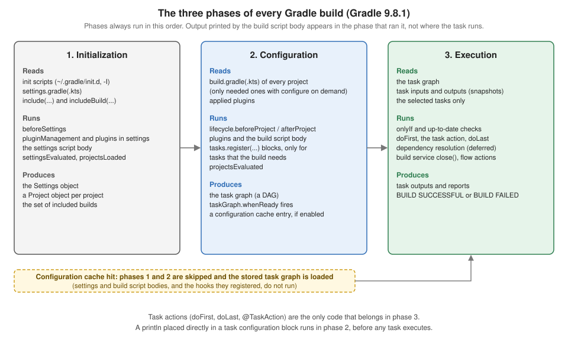

Gradle Build Lifecycle
|
This content was generated with the assistance of AI and should be verified against the official documentation before being relied on in production. |
This page is written against Gradle 9.8.1 and was run on JDK 26 on 2026-10-16 (the daemon ran on JDK 26; no toolchain
was involved, because the examples configure projects and run small tasks rather than compile code). Every example was
run through the wrapper in a scratch copy of the tidepool project: a root project and the three subprojects
tidepool-model, tidepool-engine and tidepool-cli, each applying the java-library plugin, once with Kotlin DSL
build files and once with Groovy DSL build files, and the console output is identical apart from the timings. The
scratch copy pointed its wrapper at a local copy of the same distribution archive; the properties file that a real
project commits is
distributionBase=GRADLE_USER_HOME
distributionPath=wrapper/dists
distributionSha256Sum=dce76f55f8e251a3a1f130eb120f30b3d271de2b76c9b0729d316b5a1b6dc01f
distributionUrl=https\://services.gradle.org/distributions/gradle-9.8.1-bin.zip
networkTimeout=10000
retries=0
retryBackOffMs=500
validateDistributionUrl=true
zipStoreBase=GRADLE_USER_HOME
zipStorePath=wrapper/distsThe commands use --console=plain, so that the output is a plain log instead of the rich console, and the closing
"Consider enabling configuration cache" hint that Gradle prints when the cache is off is left out of the listings. Where
a command ran with --configuration-cache the page says so. Each example states whether it is compatible with the
configuration cache. Features newer than Gradle 8.14 name their release and say whether they are incubating,
deprecated or announced for Gradle 10; Gradle 8.14.x was not installed here, so statements about it come from the
official documentation and are labelled "not run here".
Gradle does not run a build file top to bottom like a shell script. It first works out which projects exist, then configures them so that every project has its tasks, then executes only the tasks the command line asked for and the tasks they depend on. That sequence is the build lifecycle, and nearly every surprise in a build script (output that appears too early, a task that is configured but never runs, a hook that stops firing after the configuration cache is switched on) is a consequence of it. The Maven answer is a fixed list of phases that plugins bind goals to (see Maven Build Lifecycle); the Ant answer is a chain of targets that you write yourself (see Ant Targets & Extension Points). The shared comparison is in Build Automation Fundamentals. For the objects that appear below (projects, tasks, the settings file) see Gradle Core Concepts and Settings & Build Scripts.
The three phases
A Gradle build has three phases that always run in this order:
| Phase | What Gradle does | What it produces |
|---|---|---|
Initialization |
Runs the init scripts, evaluates the settings file ( |
The set of projects and included builds that take part in the build. |
Configuration |
Evaluates the build file of every participating project (with configure on demand, only the ones that are needed), registers tasks and sets their properties, and then constructs the task graph from the declared dependencies between tasks. |
The task graph for the requested tasks. With the configuration cache on, this phase also serializes the graph. |
Execution |
Runs the selected tasks in the order the graph gives, skipping tasks that are up to date or whose |
Task outputs, reports, and the final |
Source: Gradle User Manual: Build Phases

The figure also shows the consequence that matters most in practice. Because a configuration cache hit skips initialization and configuration, every line of the settings and build scripts (and every hook they registered) that runs in those phases does not run on the next build. The next sections show it with real output. For the cache itself see Configuration Cache & Isolated Projects.
The phases in your scripts
The scripts below print a line from every place a script can run code: the settings file, the root build file, each
subproject build file, a task configuration block, and the doFirst and doLast blocks of a task. The marker in
front of each line says where it came from. This is the tidepool settings file and root build file:
// settings.gradle.kts
rootProject.name = "tidepool"
println("[settings] body: root project is '${rootProject.name}'")
include("tidepool-model", "tidepool-engine", "tidepool-cli")
println("[settings] body: after include(...)")// build.gradle.kts (root project)
println("[root] configuring ${project.path}")
tasks.register("hello") {
println("[root] configuring task ${path}")
doFirst { println("[root] doFirst of ${path}") }
doLast { println("[root] doLast of ${path}") }
}// settings.gradle
rootProject.name = 'tidepool'
println "[settings] body: root project is '${rootProject.name}'"
include 'tidepool-model', 'tidepool-engine', 'tidepool-cli'
println '[settings] body: after include(...)'// build.gradle (root project)
println "[root] configuring ${project.path}"
tasks.register('hello') {
println "[root] configuring task ${path}"
doFirst { println "[root] doFirst of ${path}" }
doLast { println "[root] doLast of ${path}" }
}Each subproject has a build file that applies java-library, prints [model] configuring ${project.path} (and the
same with [engine] and [cli]), and registers a report task whose doLast prints a line. Running the root task
hello gives (the output is the same for both DSLs):
./gradlew --console=plain hello[settings] body: root project is 'tidepool'
[settings] body: after include(...)
> Configure project :
[root] configuring :
> Configure project :tidepool-cli
[cli] configuring :tidepool-cli
> Configure project :tidepool-engine
[engine] configuring :tidepool-engine
> Configure project :tidepool-model
[model] configuring :tidepool-model
[root] configuring task :hello
> Task :hello
[root] doFirst of :hello
[root] doLast of :hello
BUILD SUCCESSFUL in 283ms
1 actionable task: 1 executedRead the output as the three phases:
-
The
[settings]lines come first, during initialization, before any> Configure projectheader. The settings file runs completely before Gradle even knows which build files to read. -
Each
> Configure projectheader starts configuration of one project. The headers appear only for projects that printed something. Every project is configured, including the three subprojects that thehellotask has nothing to do with, and the order between sibling projects is an implementation detail (heretidepool-cli,tidepool-engine,tidepool-model; do not build logic on it). -
The line
[root] configuring task :hellois printed after the last project finished configuring. A block passed totasks.register(...)is not run when the task is registered; Gradle runs it only when the task is needed, here when it builds the task graph forhello. This is the lazy task API (task configuration avoidance), which appeared in Gradle 4.9 and which theregistercalls on this page use. Tasks that nothing requests are never configured. -
The
> Task :helloheader starts execution.doFirstanddoLastblocks run now, in that order, and nothing else.
Run the same build with the configuration cache. The first run stores the entry and prints the same lines as above
(preceded by Calculating task graph as no cached configuration is available for tasks: hello and followed by
Configuration cache entry stored.). The second run reuses it:
./gradlew --console=plain --configuration-cache helloReusing configuration cache.
> Task :hello
[root] doFirst of :hello
[root] doLast of :hello
BUILD SUCCESSFUL in 247ms
1 actionable task: 1 executed
Configuration cache entry reused.Every [settings], [root], [cli], [engine] and [model] line printed during configuration is gone, because
neither the settings file nor any build file ran. Only the execution phase ran. These scripts are compatible with the
configuration cache (printing is allowed); the point is that code in the configuration phase is skipped on a hit, so
it must never be the place where something needs to happen on every build.
Asking for a task of another project changes what is configured only a little, because all projects are configured
unless configure on demand is on (see Configuration on demand). Here the same build, asked for the report task of
the three subprojects at once (./gradlew --console=plain --configuration-cache report, first run) printed
[settings] body: root project is 'tidepool'
[settings] body: after include(...)
> Configure project :
[root] configuring :
> Configure project :tidepool-cli
[cli] configuring :tidepool-cli
> Configure project :tidepool-engine
[engine] configuring :tidepool-engine
> Configure project :tidepool-model
[model] configuring :tidepool-model
[cli] configuring task :tidepool-cli:report
[engine] configuring task :tidepool-engine:report
[model] configuring task :tidepool-model:report
> Task :tidepool-model:report
[model] doLast of :tidepool-model:report
> Task :tidepool-engine:report
[engine] doLast of :tidepool-engine:report
> Task :tidepool-cli:report
[cli] doLast of :tidepool-cli:report
BUILD SUCCESSFUL in 259ms
3 actionable tasks: 3 executed
Configuration cache entry stored.(the first line, Calculating task graph as no cached configuration is available for tasks: report, is omitted). All
three report tasks are configured first, and only then does the first one run. Output interleaving between phases is
therefore never a sign that something ran "twice"; it is the phases.
Printing in the wrong phase
The classic lifecycle bug is code that was meant to run when the task runs, written where it runs when the task is configured. The task below should print its message when it is run as part of a deployment. It prints the message whenever the task is configured, and it does nothing at execution time:
// build.gradle.kts
tasks.register("deploy") {
println("Deploying to production (deploy)...") // wrong: configuration phase
}
tasks.register("deployFixed") {
doLast { println("Deploying to production (deployFixed)...") } // right: execution phase
}// build.gradle
tasks.register('deploy') {
println 'Deploying to production (deploy)...' // wrong: configuration phase
}
tasks.register('deployFixed') {
doLast { println 'Deploying to production (deployFixed)...' } // right: execution phase
}./gradlew --console=plain deployDeploying to production (deploy)...
> Task :deploy UP-TO-DATE
BUILD SUCCESSFUL in 297msThe message appears before the > Task :deploy header, which is the tell, and the task itself is UP-TO-DATE,
because it has no action to run. Running ./gradlew deployFixed prints
> Task :deployFixed
Deploying to production (deployFixed)...
BUILD SUCCESSFUL in 275ms
1 actionable task: 1 executedBecause register is lazy, ./gradlew help did not print the message at all in the same project: the deploy
block runs only when something requests the task. The bug is therefore intermittent, which makes it worse: a task that
was never requested stays quiet until a script, a report or an IDE import realizes it. Older eager APIs make it
visible on every build. In the Groovy DSL, task eagerDeploy { println ... } creates the task at once and runs the
block on every build, for every command, including help:
task eagerDeploy {
println 'Deploying to production (eagerDeploy)...'
}> Configure project :
Deploying to production (eagerDeploy)...
> Task :help(./gradlew help, trimmed after the > Task :help header.) In the Kotlin DSL the equivalents tasks.create(...) and
val x by tasks.creating { } are deprecated in Gradle 9.8.1: the compiler reports them as deprecated, the warning for
creating says to use registering, and others point to the Gradle 9.6 upgrading guide. The old task name << { ... } shorthand, which wrapped the whole
body in an action, was removed in Gradle 5.0 (use doLast and tasks.register). The rule is the same as before:
anything that must happen at execution belongs in doFirst, doLast, an @TaskAction method, or a task input/output
declaration, never in the configuration block.
Both DSL versions of deploy and deployFixed were run with Gradle 9.8.1 and print the same output; the
println calls are compatible with the configuration cache.
The task graph
During configuration Gradle turns the dependsOn relationships of the requested tasks (and the ones that plugins
declare) into a directed acyclic graph of tasks across all projects, and it builds this graph completely before the
first task runs. That is what makes --dry-run possible. The example below declares three tasks with dependencies, a
task that is always skipped, and a finalizedBy cleanup task:
// build.gradle.kts
val prepare = tasks.register("prepare") {
doLast { println("[graph] prepare") }
}
val skipped = tasks.register("skipped") {
onlyIf { false }
doLast { println("[graph] skipped (never printed)") }
}
val cleanup = tasks.register("cleanup") {
doLast { println("[graph] cleanup") }
}
tasks.register("publishDemo") {
dependsOn(prepare, skipped)
finalizedBy(cleanup)
doLast { println("[graph] publishDemo") }
}
gradle.taskGraph.whenReady {
println("[graph] whenReady, ${allTasks.size} tasks: ${allTasks.joinToString { it.path }}")
println("[graph] contains :skipped? ${hasTask(":skipped")}")
}// build.gradle
def prepare = tasks.register('prepare') {
doLast { println '[graph] prepare' }
}
def skipped = tasks.register('skipped') {
onlyIf { false }
doLast { println '[graph] skipped (never printed)' }
}
def cleanup = tasks.register('cleanup') {
doLast { println '[graph] cleanup' }
}
tasks.register('publishDemo') {
dependsOn prepare, skipped
finalizedBy cleanup
doLast { println '[graph] publishDemo' }
}
gradle.taskGraph.whenReady { graph ->
println "[graph] whenReady, ${graph.allTasks.size()} tasks: ${graph.allTasks*.path.join(', ')}"
println "[graph] contains :skipped? ${graph.hasTask(':skipped')}"
}A dry run walks the graph without running any task action:
./gradlew --console=plain publishDemo --dry-run[graph] whenReady, 4 tasks: :prepare, :skipped, :publishDemo, :cleanup
[graph] contains :skipped? true
:prepare SKIPPED
:skipped SKIPPED
:publishDemo SKIPPED
:cleanup SKIPPED
BUILD SUCCESSFUL in 341msA real run, ./gradlew --console=plain publishDemo, prints:
[graph] whenReady, 4 tasks: :prepare, :skipped, :publishDemo, :cleanup
[graph] contains :skipped? true
> Task :prepare
[graph] prepare
> Task :skipped SKIPPED
> Task :publishDemo
[graph] publishDemo
> Task :cleanup
[graph] cleanup
BUILD SUCCESSFUL in 285ms
3 actionable tasks: 3 executedFour facts follow from the output:
-
The
whenReadycallback ran during configuration, once the graph existed and before the first task, and it saw the tasks of the whole graph,finalizedBytask included. -
A task skipped by
onlyIfis still in the graph (hasTask(":skipped")is true and the task is listed). Whether it runs is decided per task, at execution time, which is why it showsSKIPPEDand is not counted among the "3 actionable tasks". -
dependsOn(prepare, skipped)means both run beforepublishDemo; it says nothing about the order between those two. In this runpreparecame first. In a later run of the Kotlin version with the configuration cache the order wasskippedthenprepare, so declaremustRunAfterwhen the order between independent tasks matters (see Gradle Tasks). -
The configuration cache stores the graph, so
whenReadyruns on the run that stores the entry and does not run on the next one. A real build must not depend on a configuration-time graph callback to do work.
For Java projects the graph is what the plugins declare. In the same project (with the java-library plugin applied
to the three subprojects, and the [graph] lines of the previous script still present),
./gradlew --console=plain :tidepool-cli:assemble --dry-runlists the tasks that assemble of the command-line project needs, in execution order, with the library tasks of the
two projects it depends on:
[graph] whenReady, 7 tasks: :tidepool-model:compileJava, :tidepool-engine:compileJava, :tidepool-cli:compileJava, :tidepool-cli:processResources, :tidepool-cli:classes, :tidepool-cli:jar, :tidepool-cli:assemble
[graph] contains :skipped? false
:tidepool-model:compileJava SKIPPED
:tidepool-engine:compileJava SKIPPED
:tidepool-cli:compileJava SKIPPED
:tidepool-cli:processResources SKIPPED
:tidepool-cli:classes SKIPPED
:tidepool-cli:jar SKIPPED
:tidepool-cli:assemble SKIPPED
BUILD SUCCESSFUL in 331msThe Maven reactor builds modules in dependency order and runs the same phases in each (see Maven Build Lifecycle); Gradle computes the graph of tasks across all projects instead, so a task of one project can run before or alongside tasks of another.
The lifecycle in order
The manual lists every point at which Gradle evaluates a script or fires a hook, in order, when the configuration cache and Isolated Projects are off. The table keeps the entries that matter for build logic; the numbers are the manual’s.
| Phase | # | Hook or block | Where it lives |
|---|---|---|---|
Initialization |
1 |
Init scripts |
|
2 |
|
an init script, or the settings file |
|
3-4 |
|
|
|
5 |
The settings script body ( |
|
|
6 |
|
an init script or the settings file |
|
7 |
|
an init script or the settings file |
|
Configuration |
8 |
|
an init script or a build file (not recommended in build files) |
9 |
|
an init script or the parent project’s build file |
|
10-12 |
|
|
|
13 |
|
a build file (not recommended) |
|
14 |
|
an init script or the root build file |
|
15 |
|
an init script or the root build file |
|
16 |
Task graph construction ( |
internal |
|
Execution |
17 |
Task input snapshotting, |
internal |
18 |
Task execution ( |
console or CLI |
The manual also warns that code that eagerly asks a configuration for its resolved state (configuration.files,
resolvedConfiguration, iterating a configuration) triggers dependency resolution immediately, at that point of
configuration. With the configuration cache on, graph and artifact resolution must complete during configuration anyway,
because the result has to be serialized. Resolution itself is covered in
Dependency Management Fundamentals.
Hooks, observed
An init script can register a callback at each point. The script below prints a line from every gradle hook that is
useful in practice; it is passed to the build with -I (an init script can also live in ~/.gradle/init.d, see
Directories & Logging):
// hooks.init.gradle.kts
println("[init] init script body")
gradle.beforeSettings { println("[init] beforeSettings") }
gradle.settingsEvaluated { println("[init] settingsEvaluated: ${rootProject.name}") }
gradle.projectsLoaded { println("[init] projectsLoaded: ${rootProject.allprojects.size} projects") }
gradle.lifecycle.beforeProject { println("[init] lifecycle.beforeProject ${path}") }
gradle.lifecycle.afterProject { println("[init] lifecycle.afterProject ${path}") }
gradle.projectsEvaluated { println("[init] projectsEvaluated") }
gradle.taskGraph.whenReady { println("[init] taskGraph.whenReady: ${allTasks.joinToString { it.path }}") }// hooks.init.gradle
println '[init] init script body'
gradle.beforeSettings { println '[init] beforeSettings' }
gradle.settingsEvaluated { settings -> println "[init] settingsEvaluated: ${settings.rootProject.name}" }
gradle.projectsLoaded { g -> println "[init] projectsLoaded: ${g.rootProject.allprojects.size()} projects" }
gradle.lifecycle.beforeProject { println "[init] lifecycle.beforeProject ${path}" }
gradle.lifecycle.afterProject { println "[init] lifecycle.afterProject ${path}" }
gradle.projectsEvaluated { println '[init] projectsEvaluated' }
gradle.taskGraph.whenReady { graph -> println "[init] taskGraph.whenReady: ${graph.allTasks*.path.join(', ')}" }Run against the tidepool build of the previous section (./gradlew --console=plain -I hooks.init.gradle.kts
:tidepool-model:report, or -I hooks.init.gradle for Groovy; both gave this output):
[init] init script body
[init] beforeSettings
[settings] body: root project is 'tidepool'
[settings] body: after include(...)
[init] settingsEvaluated: tidepool
[init] projectsLoaded: 4 projects
> Configure project :
[init] lifecycle.beforeProject :
[root] configuring :
[init] lifecycle.afterProject :
> Configure project :tidepool-cli
[init] lifecycle.beforeProject :tidepool-cli
[cli] configuring :tidepool-cli
[init] lifecycle.afterProject :tidepool-cli
> Configure project :tidepool-engine
[init] lifecycle.beforeProject :tidepool-engine
[engine] configuring :tidepool-engine
[init] lifecycle.afterProject :tidepool-engine
> Configure project :tidepool-model
[init] lifecycle.beforeProject :tidepool-model
[model] configuring :tidepool-model
[init] lifecycle.afterProject :tidepool-model
[init] projectsEvaluated
[model] configuring task :tidepool-model:report
[init] taskGraph.whenReady: :tidepool-model:report
> Task :tidepool-model:report
[model] doLast of :tidepool-model:report
BUILD SUCCESSFUL in 236ms
1 actionable task: 1 executedThis is the table above, observed: init script, beforeSettings, the settings body, settingsEvaluated,
projectsLoaded, then for each project beforeProject, its build file, afterProject; then projectsEvaluated, the
configuration of the requested task (task graph construction) and whenReady; then execution. The numbers in
projectsLoaded: 4 projects count the root and the three subprojects. With --configuration-cache the first run prints
all of this and stores the entry, and the second run prints only the > Task section: init-script hooks are
configuration-time code too, and none of them fires on a cache hit. These hooks store without a configuration cache
problem; whether they do anything useful on a hit is another question, so use them for configuring (adding repositories,
setting defaults), not for reporting results.
The gradle.lifecycle callbacks (beforeProject and afterProject) are the GradleLifecycle API introduced in Gradle
8.8. They run each callback in an isolated context that is private to each project, which is what lets Gradle optimise
and, in the future, let Isolated Projects configure projects in parallel; the older gradle.beforeProject and
project.afterEvaluate style hooks reach across projects and are the ones the manual recommends against. Isolated
Projects became incubating in Gradle 9.7 (not run here). The manual’s remark applies: when it is enabled, applying a
plugin from inside one of these callbacks needs extra setup.
Listeners and the configuration cache
Before the lifecycle API there were listeners: interfaces such as BuildListener, TaskExecutionListener and
TaskExecutionGraphListener, and the matching gradle.addBuildListener(...), gradle.buildFinished { } and
gradle.taskGraph.afterTask { } callbacks. They are created during configuration and called during execution, so the
configuration cache cannot restore them. The manual’s table of the common ones in Gradle 9.8.1:
| Interface | What it observes | Works with the configuration cache |
|---|---|---|
|
Projects loaded or evaluated. |
No |
|
Before and after each task executes. |
No |
|
The task execution graph was populated. |
No |
|
A task started or completed its action. |
No |
|
Dependency resolution, project evaluation, test execution. |
No |
|
Progress of, and completion of, an operation. |
Yes |
Gradle.buildFinished was marked deprecated in Gradle 7 and buildStarted in Gradle 6 (per the lifecycle page); buildStarted was
removed in Gradle 7.0, while in Gradle 9.8.1 buildFinished is still there. It works in a normal build:
// bf.init.gradle.kts
gradle.buildFinished { println("[init] buildFinished") }// bf.init.gradle
gradle.buildFinished { println '[init] buildFinished' }The Kotlin DSL compiler reports it as deprecated ('fun buildFinished(action: Action<in BuildResult>): Unit' is deprecated); the Groovy DSL compiles it silently. Without the configuration cache the line is printed after the last
task (./gradlew --console=plain -I bf.init.gradle.kts :tidepool-model:report):
> Task :tidepool-model:report
[model] doLast of :tidepool-model:report
[init] buildFinished
BUILD SUCCESSFUL in 458msWith --configuration-cache the same callback fails the build, on a cache miss as well as a hit, because the cache
refuses to store a registration it could not replay (the report links are omitted from the listing; the Groovy DSL init
script gives the same message with a Where: line for its script):
./gradlew --console=plain -I bf.init.gradle.kts --configuration-cache :tidepool-model:reportFAILURE: Build failed with an exception.
* What went wrong:
Configuration cache problems found in this build.
1 problem was found storing the configuration cache.
- Initialization script 'bf.init.gradle.kts': registration of listener on 'Gradle.buildFinished' is unsupported
See https://docs.gradle.org/9.8.1/userguide/configuration_cache_requirements.html#config_cache:requirements:build_listeners
> Listener registration 'Gradle.buildFinished' by build ':' is unsupported.The two supported replacements are a build service whose close() runs at the end of the build, and a flow action
that receives the build result. Both are shown next. The manual names the same two: a build service that implements
OperationCompletionListener replaces taskGraph.afterTask and observes each task completion, and its close() takes
the place of buildFinished; for end-of-build logic that does not need to see each task, a dataflow action is the
supported replacement.
Build services and flow actions
A build service’s lifecycle
A build service (see
Worker API & Build Services) is a
shared object that Gradle creates lazily, the first time a task or other consumer asks for it, and keeps for the rest of
the build. If it implements AutoCloseable, Gradle calls close() once when the service is no longer needed, which in
practice is when the build ends. That makes close() the reliable end-of-build hook, and, unlike a
buildFinished callback, it also runs when the build was reused from the configuration cache.
// build.gradle.kts
abstract class BuildDurationService : BuildService<BuildServiceParameters.None>, AutoCloseable {
init { println("[service] created") }
override fun close() { println("[service] close(): the build is over") }
}
val durationService = gradle.sharedServices.registerIfAbsent("buildDuration", BuildDurationService::class) {}
tasks.register("timed") {
usesService(durationService)
val service = durationService
doLast {
service.get()
println("[timed] doLast: service created on first use")
}
}// build.gradle
import org.gradle.api.services.BuildService
import org.gradle.api.services.BuildServiceParameters
abstract class BuildDurationService implements BuildService<BuildServiceParameters.None>, AutoCloseable {
BuildDurationService() { println '[service] created' }
@Override
void close() { println '[service] close(): the build is over' }
}
def durationService = gradle.sharedServices.registerIfAbsent('buildDuration', BuildDurationService) {}
tasks.register('timed') {
usesService(durationService)
def service = durationService
doLast {
service.get()
println '[timed] doLast: service created on first use'
}
}A flow action
A flow action runs logic in response to a build lifecycle event, most commonly the end of the build. It was introduced in
Gradle 8.1 (the FlowAction Javadoc says Since: 8.1 and the 8.1 release notes announce it; the lifecycle page says 7.6) as an alternative to BuildListener and the other listeners that works with the configuration cache and
Isolated Projects, and the manual marks it incubating in Gradle 9.8.1. You write a class that implements
FlowAction<T> with a matching FlowParameters interface, and a plugin that registers it with the FlowScope service
that Gradle injects next to FlowProviders. The build below adds the flow action to the build service example, and a
boom task that always fails:
// build.gradle.kts (continued)
import org.gradle.api.flow.BuildWorkResult
import org.gradle.api.flow.FlowAction
import org.gradle.api.flow.FlowParameters
import org.gradle.api.flow.FlowProviders
import org.gradle.api.flow.FlowScope
import javax.inject.Inject
abstract class PrintBuildResultPlugin : Plugin<Project> {
@get:Inject abstract val flowScope: FlowScope
@get:Inject abstract val flowProviders: FlowProviders
override fun apply(target: Project) {
flowScope.always(BuildResultPrinter::class.java) {
parameters.buildResult.set(flowProviders.buildWorkResult)
}
}
}
abstract class BuildResultPrinter : FlowAction<BuildResultPrinter.Parameters> {
interface Parameters : FlowParameters {
@get:Input
val buildResult: Property<BuildWorkResult>
}
override fun execute(parameters: Parameters) {
val result = parameters.buildResult.get()
if (result.failure.isPresent) {
println("[flow] build failed: ${result.failure.get().message}")
} else {
println("[flow] build succeeded")
}
}
}
apply<PrintBuildResultPlugin>()
tasks.register("boom") {
doLast { throw GradleException("boom") }
}// build.gradle (continued)
import org.gradle.api.flow.BuildWorkResult
import org.gradle.api.flow.FlowAction
import org.gradle.api.flow.FlowParameters
import org.gradle.api.flow.FlowProviders
import org.gradle.api.flow.FlowScope
import javax.inject.Inject
abstract class PrintBuildResultPlugin implements Plugin<Project> {
@Inject abstract FlowScope getFlowScope()
@Inject abstract FlowProviders getFlowProviders()
@Override
void apply(Project target) {
flowScope.always(BuildResultPrinter) {
it.parameters.buildResult.set(flowProviders.buildWorkResult)
}
}
}
abstract class BuildResultPrinter implements FlowAction<BuildResultPrinter.Parameters> {
interface Parameters extends FlowParameters {
@Input
Property<BuildWorkResult> getBuildResult()
}
@Override
void execute(Parameters parameters) {
def result = parameters.buildResult.get()
if (result.failure.present) {
println "[flow] build failed: ${result.failure.get().message}"
} else {
println '[flow] build succeeded'
}
}
}
apply plugin: PrintBuildResultPlugin
tasks.register('boom') {
doLast { throw new GradleException('boom') }
}The two examples are compatible with the configuration cache and were run with it. ./gradlew --console=plain
--configuration-cache timed printed on the run that stored the entry (the Calculating task graph as no cached
configuration is available for tasks: timed line is omitted) and on the run that reused it, the same lines:
> Task :timed
[service] created
[timed] doLast: service created on first use
[flow] build succeeded
[service] close(): the build is over
BUILD SUCCESSFUL in 236ms
1 actionable task: 1 executed
Configuration cache entry stored.On the second run the output was the same except for the timing and Configuration cache entry reused., preceded by
Reusing configuration cache.: the flow action and the service close() both ran although configuration did not. The
service was created when doLast called service.get(), not when it was registered. A failing build still reaches the
flow action (./gradlew --console=plain --configuration-cache boom, trimmed after the first lines of the failure
report):
> Task :boom FAILED
[flow] build failed: Execution failed for task ':boom' (registered in build file 'build.gradle.kts').
FAILURE: Build failed with an exception.
* What went wrong:
Execution failed for task ':boom' (registered in build file 'build.gradle.kts').
> boom(The Groovy DSL run printed the same lines with the build file path and line number in the message.) Plain println
inside a flow action goes to the console; a real build would publish a result, send a notification or write a file.
Gradle printed the flow action’s line before the service’s close() in these runs, and the manual does not promise an
order between the two.
Configuration on demand
In a multi-project build every project is configured on every run, as the earlier hello output showed. Configuration
on demand configures only the projects that the requested tasks need. The root project is always configured; the project
of the current directory is configured when Gradle runs without tasks; and a project is configured when a requested task
lives in it, when a task dependency of a requested task points at it by path, or when a standard project dependency makes
it needed. The manual calls the feature incubating, and Gradle prints Configuration on demand is an incubating feature.
when it is used (so, as an incubating feature, it can change); it works well for decoupled projects, which interact only
through declared dependencies and task dependencies.
Enable it for one run with --configure-on-demand, or for every run with org.gradle.configureondemand=true in
gradle.properties (see
Build Environment & Properties).
The same tidepool build, asked for :tidepool-model:report without and with the flag (the first lines of each output;
these runs did not use the configuration cache):
./gradlew --console=plain :tidepool-model:report[settings] body: root project is 'tidepool'
[settings] body: after include(...)
> Configure project :
[root] configuring :
> Configure project :tidepool-cli
[cli] configuring :tidepool-cli
> Configure project :tidepool-engine
[engine] configuring :tidepool-engine
> Configure project :tidepool-model
[model] configuring :tidepool-model
[model] configuring task :tidepool-model:report
> Task :tidepool-model:report
[model] doLast of :tidepool-model:report./gradlew --console=plain --configure-on-demand :tidepool-model:reportConfiguration on demand is an incubating feature.
[settings] body: root project is 'tidepool'
[settings] body: after include(...)
> Configure project :
[root] configuring :
> Configure project :tidepool-model
[model] configuring :tidepool-model
[model] configuring task :tidepool-model:report
> Task :tidepool-model:report
[model] doLast of :tidepool-model:reportWith the flag, only the root project and tidepool-model were configured; the engine and the command-line project were not.
Asking for :tidepool-cli:report configured the root project and tidepool-cli, and still not tidepool-engine, although
tidepool-cli has an api(project(":tidepool-engine")) dependency: the report task does not use that dependency,
so nothing pulled the engine in. A task that does need it pulls it in: ./gradlew --configure-on-demand :tidepool-cli:compileJava --dry-run configured the root project, tidepool-cli, tidepool-engine and tidepool-model.
The cost is the coupling rule. Gradle allows a project to read or change another project’s configuration, and that is what
breaks configuration on demand: if tidepool-engine reads a property that only the build file of tidepool-model sets, the
result depends on whether tidepool-model happened to be configured. Configuration injection with allprojects { } or
subprojects { } is the usual source of coupling, which is one reason the manual steers toward convention plugins (see
Convention Plugins & Sharing Build Logic).
For the layout of such builds see
Multi-Project Builds. Do not use configuration
on demand and the configuration cache expecting the same behaviour: the cache skips configuration of all projects on a
hit, whereas on-demand configuration only narrows which projects a miss configures.
Gradle 8.14 and Gradle 9
Gradle 8.14.x was not available for these runs, so this section is not run here; it summarizes the release history and the official documentation:
| Release | Lifecycle-related change |
|---|---|
Gradle 6 |
|
Gradle 7 |
|
Gradle 8.1 |
The configuration cache is stable. It is what makes the settings and build script bodies skip on a hit. Flow actions are introduced (8.1 release notes); incubating in 9.8.1. |
Gradle 8.8 |
The |
Gradle 9.0.0 |
The configuration cache becomes the preferred mode of running Gradle, still off by default. |
Gradle 9.7.0 |
Isolated Projects incubating (release history). |
Announced for Gradle 10 |
The configuration cache becomes the default (stated as announced, not released). |
On Gradle 8.14 every example on this page except the 9.x-only behaviour would be expected to run, since gradle.lifecycle,
flow actions, configuration on demand and the configuration cache all exist there. Gradle 9 needs JVM 17 or newer to run
Gradle itself, while projects can still compile with older JDKs through toolchains. For the full table see
Gradle Versions, Compatibility & Release History.
Where the books are outdated
The book Gradle in Action (Gradle 1.7) teaches the three phases and builds on Project and Task objects, and that part
is still true. What changed:
| Book statement or practice | Current status |
|---|---|
|
Removed in Gradle 5.0; use |
Listeners and |
Deprecated; they fail with the configuration cache (shown above). Use build services ( |
Tasks created and configured eagerly ( |
Configured on every build, the cause of the printing bug above. Use |
The settings and build files are evaluated on every build |
With the configuration cache (stable 8.1, preferred in 9.0) both are skipped on a hit. |
Dependency resolution in the configuration phase |
Resolve lazily, at execution; |
Gradle 1.x version numbers and JDK 1.5 |
Gradle 9 needs JVM 17 or newer; versioning is semantic since 9.0. |
Equivalents in Ant and Maven
| Gradle | Maven | Ant |
|---|---|---|
Three phases per build: initialization, configuration, execution |
Session start, then a fixed lifecycle of phases per module in the reactor. |
Parse the project and its targets, then run the target chain. |
Settings file decides the projects |
The parent POM’s |
|
Task graph computed from dependencies |
The lifecycle is fixed; plugins bind goals to phases. |
The |
|
Lifecycle participants and build extensions (see Maven Extensions). |
Build listeners and loggers (see Ant Listeners, Loggers & Input Handlers). |
Configuration cache skips configuration on a hit |
No equivalent; Maven re-reads the POMs on every run. |
No equivalent; Ant re-parses the build file on every run. |